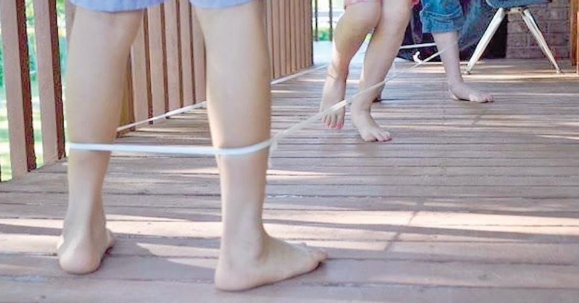
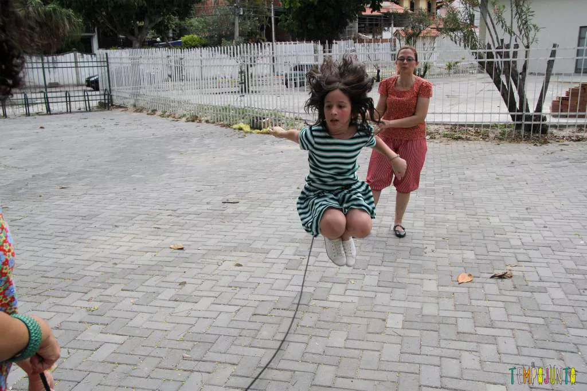

Gude

Todo o jogo se faz dentro de uma roda riscada no chão de terra batida, donde se iniciam as jogadas. O jogo consiste em por para fora da roda as bolinhas dos adversários, através de arremessos feitos pelo jogador com sua própria bolinha.
voltarAmarelinha

A brincadeira consiste em jogar uma pedra na primeira casa e ir pulando com um pé só e com as mãos na cintura todo o desenho, indo e voltando, evitando-se pisar na casa onde está a pedra e pegando-a na volta. Joga-se a pedra na segunda casa e assim sucessivamente até o céu (círculo).
voltarElástico

Os pulos são alternados de acordo com sequência estipulada pelos participantes e também de acordo com a movimentação do elástico, que sobe, desce e cruza. Uma canção, ou até mesmo o cantar de uma palavra, pode determinar os movimentos de quem pula.
voltarPula-Corda

Duas crianças batem ou giram a corda, enquanto uma terceira criança pula e diz: “cor-di-nha.” Cada sílaba dita corresponde a um pulo. Quando a criança que pula fala a palavra completinha, ela sai da corda e dá vez a outro participante. Quem está pulando não pode pisar na corda.
voltar